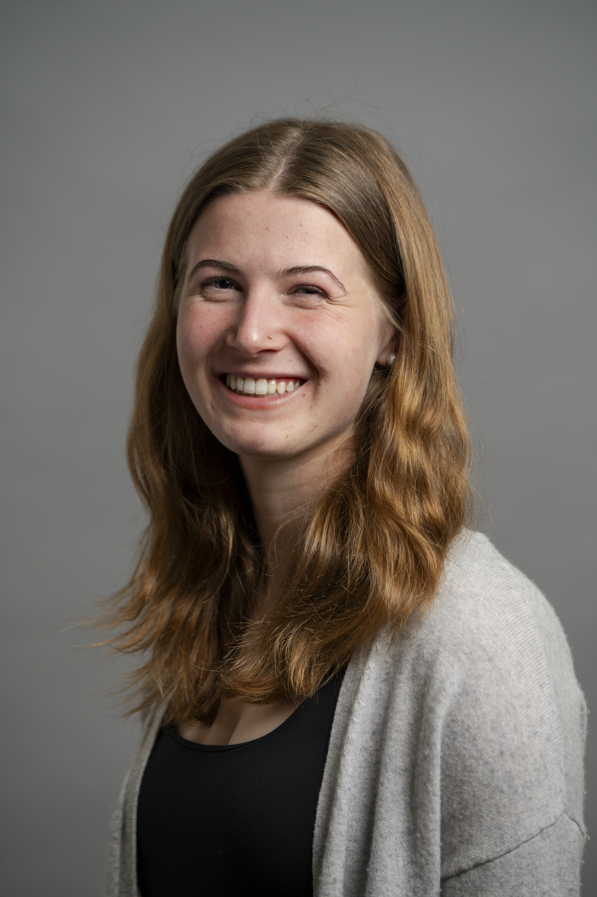

Hi, I'm Emma Levine, a student at the University of Maryland- College Park, currently earning my bachelor's degree in multi-platform journalism. I am extremely passionate about news videography and visual storytelling. I have a variety of experiences in video production, writing, filming, and editing. Some of my experiences include working for Maryland Athletics as a creative video and production intern, where I've learned production skills and am immersing myself in sports journalism. I also work as a video reporter for my university's independent, student-run newspaper, The Diamondback, where I film, edit, and produce videos on reported topics such as political violence, campus events, and local government. This website is a portfolio of my work thus far in my journalism career.
University of Maryland- College Park
Major: Journalism
Expected Graduation: May 2028
I would like to work as a news producer upon graduation or produce vertical video/social content for a paper.
Email: emmalevine15@gmail.com
LinkedIn: Emma Levine
In October 2025, UMPD detained two Al-Hikmah student journalists. The pair was covering protests outside an event featuring Israel Defense Forces soldiers and later charged with four student conduct code violations, most of which were dropped. One remains. And on Feb. 19, more than 30 faculty and staff members at UMD’s journalism college, including the dean, urged university president Darryll Pines to dismiss the case. Administrators said the letter could have misled the campus. Here’s what the professors who signed the letter had to say. 🎥: Emma Levine.
Watch on InstagramSNAP benefits are slowly being restored after the government shutdown. Passion and Compassion, a produce recovery and distribution program, works to meet the demands of those who need food, especially leading up to the holiday season. Places for food resources: Passion and Compassion, in Riverdale Park UMD Campus Pantry, in College Park College Park Community Food Bank, in College Park 🎥: Emma Levine ✍️: Mayah Nachman
Watch on Instagram